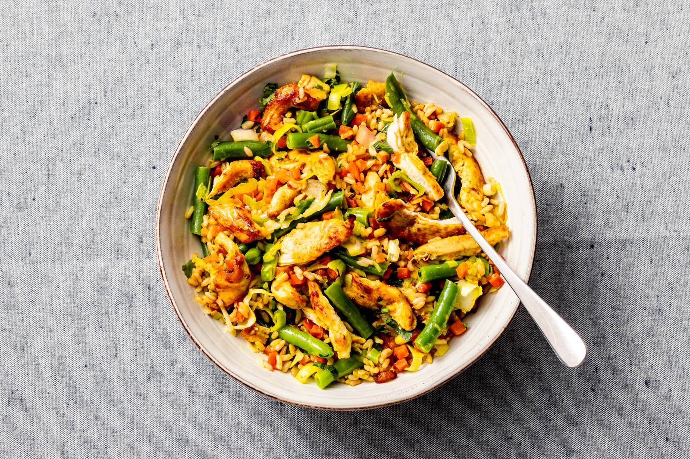

kip roerbak met sperziebonen en rijst

Ingredienten
- 300 g zilvervliesrijst
- 225 g diepvries gebroken sperzieboon
- 3 el zonnebloemolie
- 300 g kipfiletreepjes
- 1 1/2 el kerriepoeder
- 450 g nasigroente
- 40 g verse selderij
Bereiding
- Kook de rijst in een ruime pan volgens de aanwijzingen op de verpakking. Kook de sperziebonen de laatste 4 min. mee. Giet de rijst en sperziebonen af en laat staan met de deksel op de pan.
- Verhit ondertussen de olie in de wok of hapjespan en roerbak de kip met de kerrie en peper 4 min. op middelhoog vuur. Schep regelmatig om. Voeg de nasigroente toe en roerbak al omscheppend 4 min. op hoog vuur.
- Snijd ondertussen de selderij fijn. Voeg de rijst, sperziebonen en selderij toe en roerbak 2 min. mee. Breng op smaak met peper en eventueel zout. Verdeel over diepe borden en serveer.